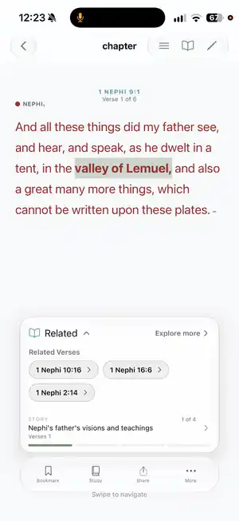
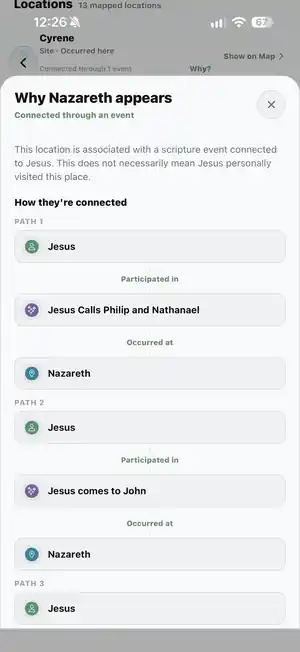

Who is connected to whom?
Open a person and follow the people, events, places, groups, and source passages around them.
Cultivate is built around three things: a focused one-verse reader, private Study Spaces for groups, and Cultivate Labs content that helps you follow the people, events, places, topics, and related verses behind the text.
Swipe through scripture one verse at a time, then switch to a full chapter whenever you want more context.
02 · Groups Study SpacesStudy together across iPhone, iPad, Android phones, and tablets while keeping your personal study private unless you choose to share it.
03 · Cultivate Labs Explorer + Topical GuideFollow people, events, places, topics, and scripture connections built from Cultivate Labs content.
And it came to pass that I beheld that the great mother of abominations did gather together multitudes upon the face of all the earth...
Scroller puts a single verse on screen and lets you move through scripture with a simple vertical swipe. When you want the whole chapter, switch to traditional Chapter mode without leaving the same study system.

Cultivate remembers the exact verse you stopped on and keeps the study tools close without crowding the text.
Create a private Study Space for family, friends, a class, or another group. Read the same scripture, see how the group is moving through it, and share selected thoughts without turning the experience into a chat feed or leaderboard.
One group, whatever device everyone uses. Study Spaces work across iPhone, iPad, Android phones, and tablets, so everyone can read, share, and follow the same group from the device they already have.

Explorer turns scripture into a connected map of people, places, events, groups, speakers, story moments, and source passages. Cultivate Labs also powers the Topical Guide, helping you move from a topic to related scripture across the standard works.
Open a person and follow the people, events, places, groups, and source passages around them.
Events connect participants, places, groups, and the scripture passages that describe them.
The Topical Guide brings Cultivate Labs content into a simpler topic-first path across the standard works.


The reader, Study Spaces, and Cultivate Labs content are the center of Cultivate. Around them are deeper tools for planning, memorization, personal study, search, and progress.
Build a Mastery set and work from guided recall toward whole-passage memory. It is a smaller part of Cultivate, but a deep one when memorization is your goal.
Browse 304 accepted topics and follow more than 14,000 accepted topic-to-verse relationships across the standard works.
Use open-ended Free Read, paced goals, weekly reading, or custom assignments. Adjust the schedule later without throwing away completed reading.
Bookmarks, highlights, notes, collections, Momentum, scripture search, and reading history keep your study useful after the moment passes.
Cultivate supports iOS and Android phones and tablets with account-backed sync. A focused Apple Watch companion keeps continuation and reading-plan progress close at hand.
See the main features, learn what to expect during testing, and follow simple install instructions for iOS or Android.